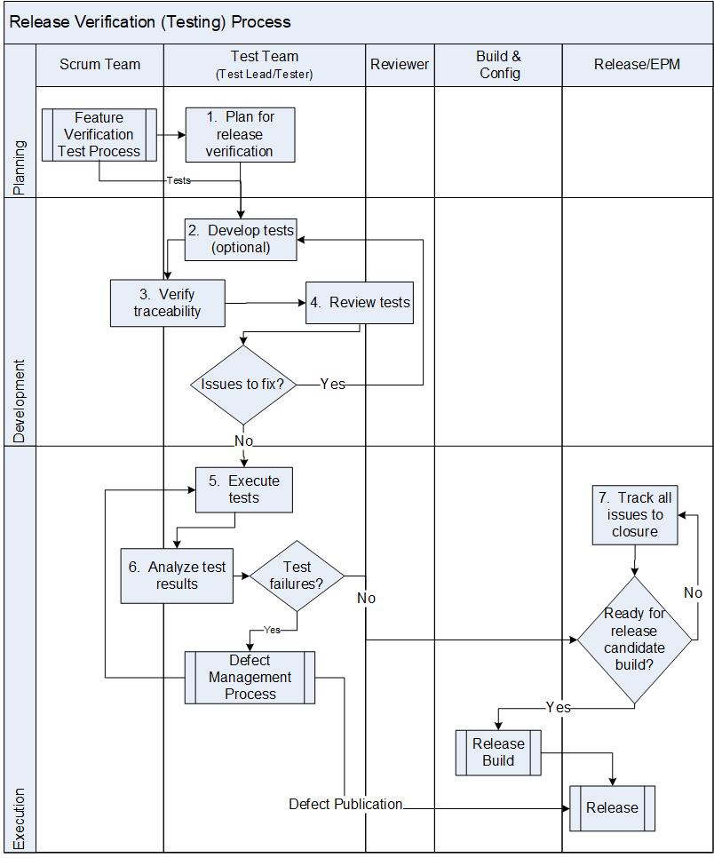

Release Verification (Testing) Process¶
The goal of this process is to confirm that the software meets the defined software requirements and is achieved through the execution of tests. This process ensures that verification tests are conducted to verify the requirements and that the integrated system complies with the software requirements.
The Test Lead is responsible for this process.
Entry Criteria |
|
Inputs |
|
Exit Criteria |
|
Outputs |
|
Activities¶

Step # |
Activity Name |
Description |
|---|---|---|
1 |
Plan for release verification |
Develop a strategy for verifying the integrated software taking into consideration the categorization (e.g., software, component, function and design) of the software requirements and the requirements of any standard(s), if applicable.
The release test strategy outlines the end-to-end product verification cycle that occurs over the course of an entire release. It details the set of configurations used for regression, performance, and footprint tests. It also details the validate workflows for customer uses case & out-of-box experiences. The release test strategy is reviewed by the Techical Feature Owner, Product Management, Scrum Team, EPM and other relevant stake holders using the Peer Review system (eg., Code Collaborator), as defined by the Document Review process and placed under Configuration Management system. |
2 |
Develop Tests (Optional) |
The release test process encompasses different categories of tests (e.g., regression, system, performance, footprint, out-of-box experience, etc.). As part of release testing, new test cases may be developed with the goal of demonstrating compliance of the software to required workflows and experiences through verification tests. Design tests to verify the requirement by:
Create new tests and/or update the existing tests as regression tests for re-testing the software when a change in the software items occur. |
3 |
Verify Traceability |
Using the Test Management system, consistency and bidirectional traceability are established between software requirements and release test specification, including verification test cases. |
4 |
Review Tests |
Verification tests are reviewed and the reviewer examines the test code for defects. In case of any findings, the Author and Reviewer mutually agree on the action. The findings are resolved by repeating the above steps. In the case that agreement cannot be reached, the issue is escalated to the Test Lead. |
5 |
Execute Tests |
Verify the software using test cases that the software fulfilled its intended use. Verification/Test is performed according to the test cases. Document the test results. Software Test results include the test logs and test status. Test results are uploaded to the Test Management System. |
6 |
Analyze Test Results |
Analyze the verification test results. For test failures, take steps to resolve the failure by either fixing the test code or filing a defect against the product. Defects are evaluated, resolved, or published as specified by the Defect Management Process. Performance and footprint test results are reviewed by Product Technical Leads. In the case of significant degradation, defects are created in the Defect Management Process. |
7 |
Track All Issues to Closure |
Once completed, the test code and review artifacts are delivered by checking them into the CM. Engineering Program Manager (EPM) tracks all issues to closure and manages project activities toward release. |
{kind=link}
Change Log¶
Date |
Change Request ID |
Version |
Change By |
Description |
05/19/2020 |
N/A |
0.1 |
Shree Vidya Jayaraman |
Initial Draft |
08/04/2020 |
N/A |
0.2 |
Shree Vidya Jayaraman |
Updates based on Kitty’s feedback |
08/05/2020 |
N/A |
0.3 |
Shree Vidya Jayaraman |
Updates to Entry Criteria and Diagram based on Kitty’s feedback |
08/14/2020 |
N/A |
0.4 |
Shree Vidya Jayaraman |
Updates to step 6 based on Dapeng’s feedback |